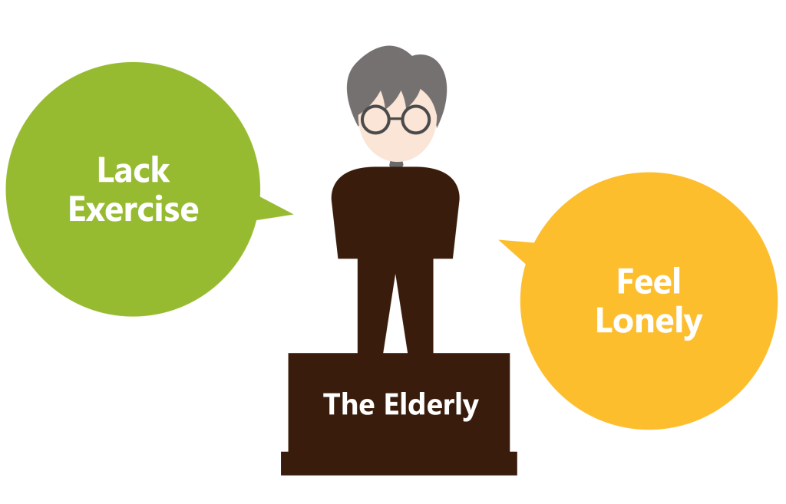
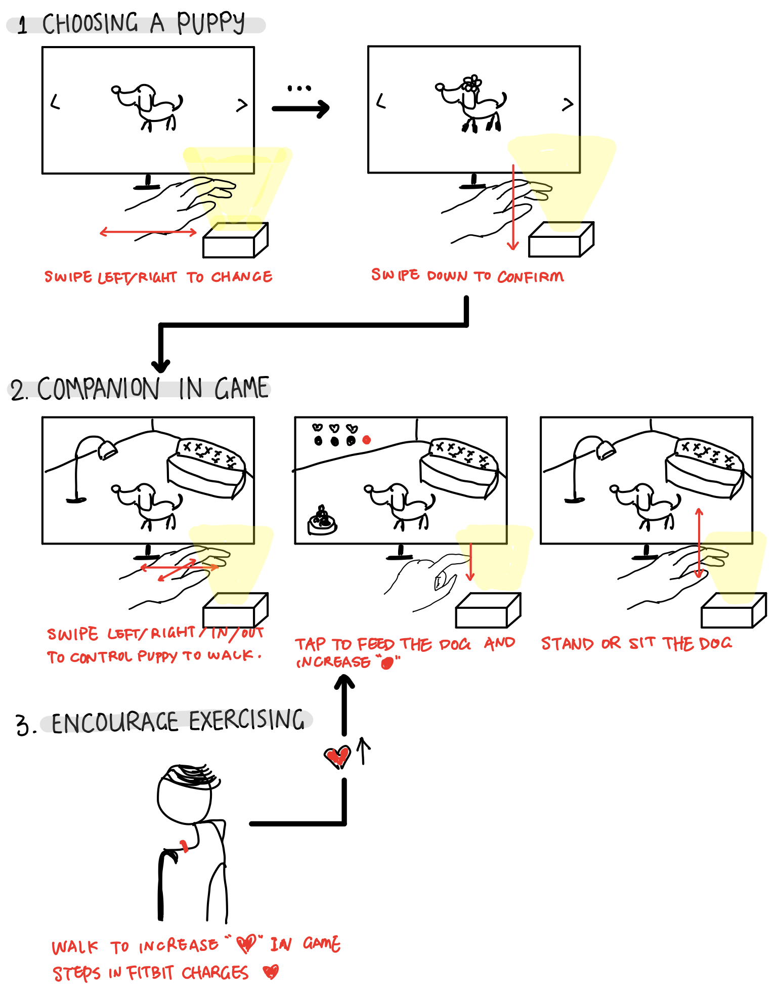

DOGO
Motion Sensing Game for the Elderly
This is a course project for User Experience Design (2015). We are given three days to develop a motion sensing game for the elderly. It is aimed to help us understanding the design considerations we learned in class, also make us more comfortable to design with new technology.
We adopted LeapMotion to sense players’ hand motion, and we were using Unity 3D and LeapMotion API to develop. Here is the high-fidelity prototype (actually a real part) of our game.
First, we want to decide what to do for the elderly. Based on our understanding of the elderly around us, we made following predispositions.
Those predispositions about the needs of elderly inspired us immediately that “they need a dog!”. However, as far as our knowledge, only a very small portion of elderly around us were raising an actual animal, and even smaller amount of them are raising dogs. “Whey does that happen?” The question went into our mind.
In our research part, we mainly want to figure out the following parts of questions:
Basically, our research just verified what we think about the elderly, and raised several points for us to notice:
Based on the results of our research, we decided to develop a dog-raising game for the elderly. In our game, the elderly could interact with the dog. To make it more emotionally appealing, we chose the avatar of dog to be a puppy dog. To encourage elderly to go out taking more exercise, we decided that we could combine our game with Fitbit to collect the steps of the elderly and convert that into some incitements in this game.
According to the design concept, we developed the game structure.
The elderly could choose a breed of puppy to raise. In our game, they could interact with the puppy. The dog has two status indicators. The relationships between those two indicators and game status are as following:
Task flow is divided into in-game part and out-of-game part, as shown in the diagram.
To better convey the impact of our design, we created a storyboard:
We developed it on Unity 3D with LeapMotion API. To achieve better immersion experience, we adopted high fidelity model for dog and environmental settings, which we bought from the unity 3D library. Using our prototype, users could using one-hand movement to command a dog to sit, stand up, eat and move towards four direction.
Due to the time limit, we decided to just develop the main part of motion sensing game, without actually implement the fitbit API.
Actually this is the most difficult part for me and Mengdi. We had coding background before, but not proficient coder. Time for this project is so limited, there is only two days left for us to code. In terms of coding, we watched tutorials about how to play with Unity 3D. We find code pieces to edit and see what would happen. We dare not say we totally figured out our codes in the end, but we successfully finished part of the game as planned.
Because the time budget for this project is so tight, we have to make our plan wisely. We successfully finished interview and decided on our main functions in one day, then we were facing the coding problem. We felt it was impossible for us to finish the whole game, so we chose to finish the main part, which is the motion sensing game part, first. As for the actual coding work, I and Mengdi divided the load of coding. She was in charge of figuring out the action of dog, and I was in charge of the LeapMotion API and scenes changing inside of the game.